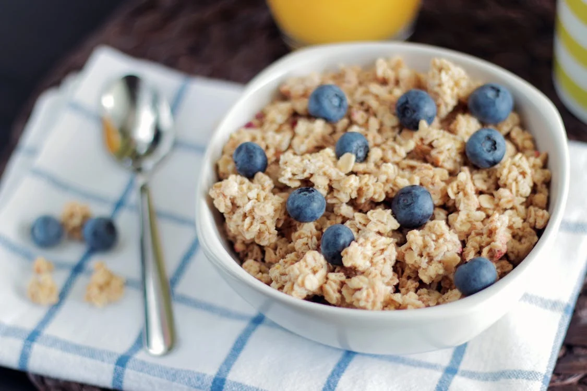

Oats

Description
This recipe will teach you how to cook an oatmeal!
Ingredients
- Oats
- Water or vegan milk
- Salt
- Sugar
Steps
- Warm up a glass of vegan milk
- Add a tip of a spoon of salt
- Add a spoon of sugar
- Cook for a minute once boiling
- Close the lid and leave for 5 minutes
- Enjoy!